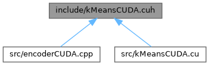

Implementation of the K-means clustering algorithm using CUDA. More...
#include <random>#include <iostream>#include <vector>#include <cuda_runtime.h>#include <point.hpp>
Include dependency graph for kMeansCUDA.cuh:

This graph shows which files directly or indirectly include this file:

Go to the source code of this file.
Classes | |
| class | km::KMeansCUDA |
| Represents the K-means clustering algorithm using CUDA. More... | |
Namespaces | |
| namespace | km |
| Main namespace for the project. | |
Functions | |
| __global__ void | km::calculate_new_centroids (int *data, int *centroids, int *labels, int *counts, int n, int k, int dim) |
| CUDA kernel to calculate the new centroids based on the assigned clusters. | |
| __global__ void | km::average_centroids (int *centroids, int *counts, int k, int dim) |
| CUDA kernel to average the calculated centroids. | |
| __global__ void | km::assign_clusters (int *data, int *centroids, int *labels, int n, int k, int dim) |
| CUDA kernel to assign each point to the nearest centroid. | |
Detailed Description
Implementation of the K-means clustering algorithm using CUDA.